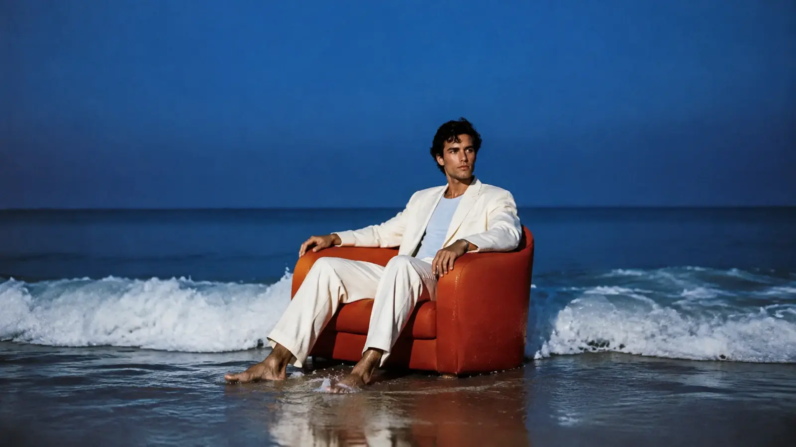
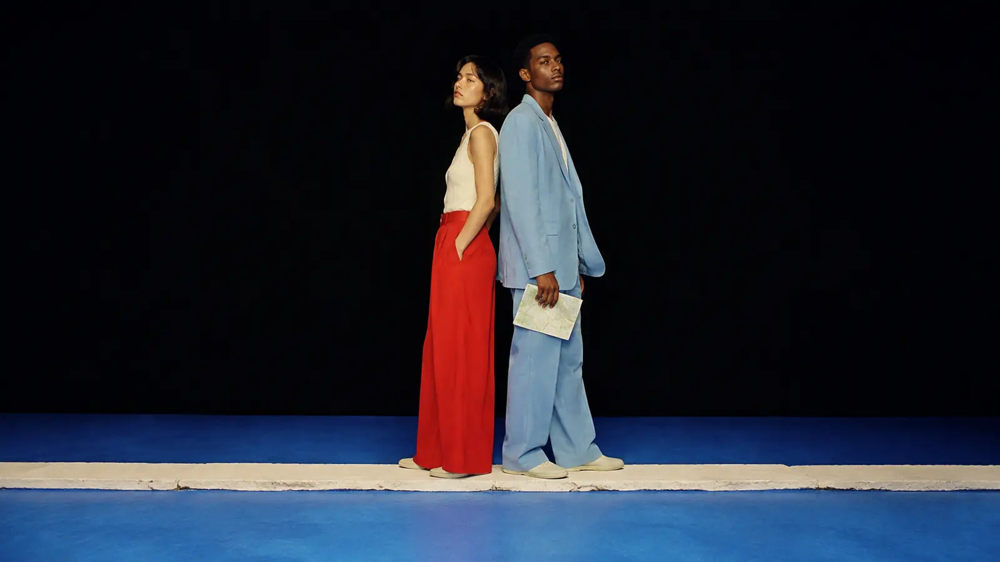
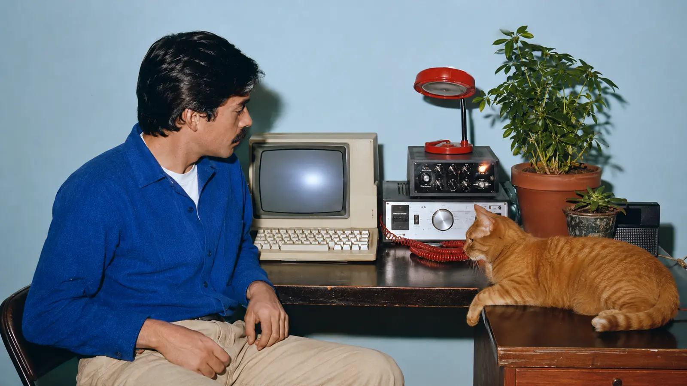
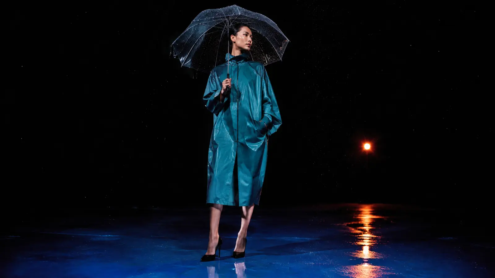

Now reading
Dawn · 05:47
First light
The city exhales before it wakes. For a few quiet minutes, every road feels like an invitation rather than a route.
Edition 06 • Field Notes
Scroll · Snap · Discover
A small collection of moments between leaving and returning. Swipe, scroll, or use the arrow keys to move through the sequence.
01 / 06

01Begin
41°54′N · 12°29′E
Now reading
Dawn · 05:47
The city exhales before it wakes. For a few quiet minutes, every road feels like an invitation rather than a route.
Read 42 sec

02Roam
38°43′N · 9°08′W
Now reading
Atlas · 09:12
We folded the map along unfamiliar lines and followed the crease. The best detours begin with a small act of trust.
Read 36 sec

03Tune
43°46′N · 11°15′E
Now reading
Static · 13:26
Between two stations, a distant voice surfaced through the static—brief, imperfect, and somehow exactly on time.
Read 31 sec

04After
52°22′N · 4°54′E
Now reading
After rain · 16:03
Rain rewrote every surface. Neon doubled in the pavement, windows sharpened, and the ordinary briefly looked new.
Read 39 sec
Float
40°38′N · 14°36′E
Now reading
Night swim · 20:41
The horizon disappeared first. Then the noise. We floated in the cool dark until distance became a feeling.
Read 44 sec
Return
41°06′N · 16°52′E
Now reading
Home · 23:18
The key turned, the hallway light came on, and the whole day settled into memory. Returning is part of every journey.
Read 34 sec
←→ to navigate